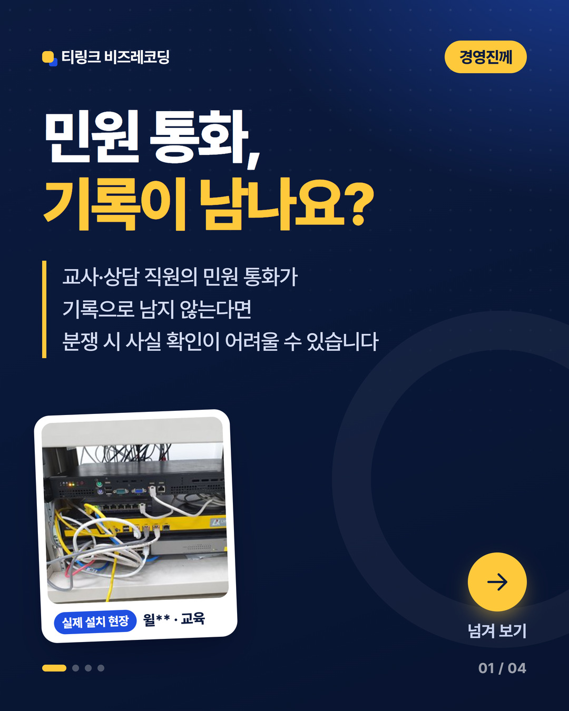
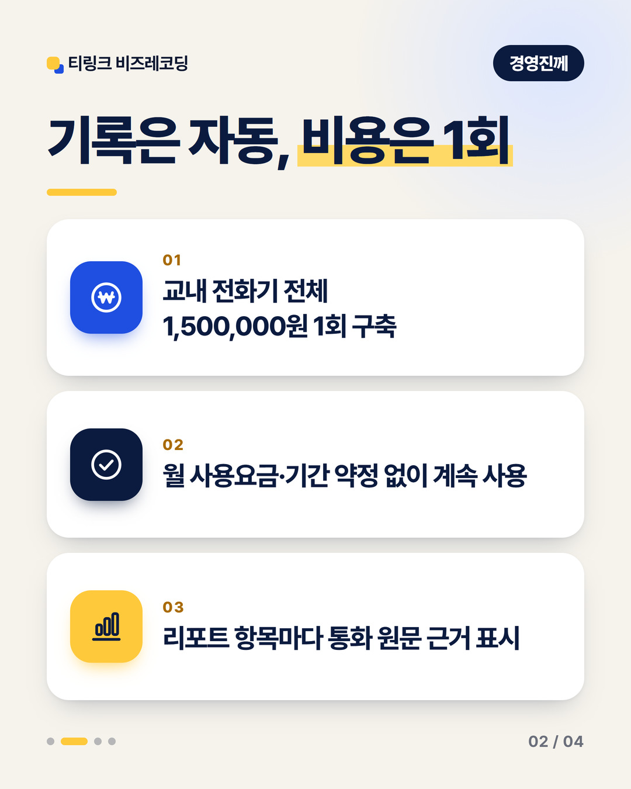

현장 사진 한 장으로,
고객마다 다른 홍보 콘텐츠를
티링크의 제품 자료와 설치 현장 사진만 넣으면, AI가 제품과 기술적 차별점을 분석해 시장과 구매 결정자에 맞는 카드뉴스·블로그·도입 사례·영업 이메일을 만들고, 게시 전에 모든 문장을 원문 근거로 확인합니다.
실행 결과 보기GitHub 저장소



티링크의 제품 자료와 설치 현장 사진만 넣으면, AI가 제품과 기술적 차별점을 분석해 시장과 구매 결정자에 맞는 카드뉴스·블로그·도입 사례·영업 이메일을 만들고, 게시 전에 모든 문장을 원문 근거로 확인합니다.
실행 결과 보기GitHub 저장소

홍보 글을 AI에게 맡기면 빠르지만, 그대로 게시하기는 어렵습니다.
자료에 없는 수치와 고객 후기가 그럴듯하게 들어갑니다. 확인하는 데 쓰는 시간이 쓰는 시간보다 길어집니다.
“99%”는 자료에서 ‘인터넷 전화’ 기준입니다. 조건을 빼고 쓰면 과장 광고가 됩니다. 자료끼리 숫자가 다른 경우도 있습니다.
경영진, 실무 관리자, 전산 담당자는 궁금한 것이 다릅니다. 시장마다 내세울 근거도 다릅니다.
AI가 쓰고, 프로그램이 사실을 판정하고, 사람이 승인합니다.
제안서·매뉴얼·회사소개서·홈페이지에서 사실을 뽑고, 출처 쪽과 원문 구절을 붙입니다. 자료끼리 다른 값도 찾습니다.
콜센터·교육기관·의료·무역물류 중 어디에 근거가 충분한지 비교하고, 결정자마다 다른 설득 전략을 세웁니다. 근거가 없으면 판단을 보류합니다.
현장 사진 한 장으로 카드뉴스, 블로그, 도입 사례, 영업 이메일을 만듭니다. 도입 사례가 없는 시장은 기능만 근거로 씁니다.
숫자, 조건, 고객명, 티링크 블로그 가이드라인을 프로그램이 검사합니다. 막힌 곳이 있으면 승인할 수 없습니다.
이 쪽을 만들 때 프로그램이 다시 잰 값만 적었습니다. 측정하지 않은 개선율은 쓰지 않습니다.
한계: 검수 통과는 ‘자료와 어긋나지 않음’을 뜻합니다. 자료 자체가 맞는지는 사람이 확인해야 합니다. 콘텐츠가 실제로 고객의 관심을 얼마나 끄는지는 측정하지 못했습니다.
업로드가 끝나면 이 자리에 링크가 들어갑니다.